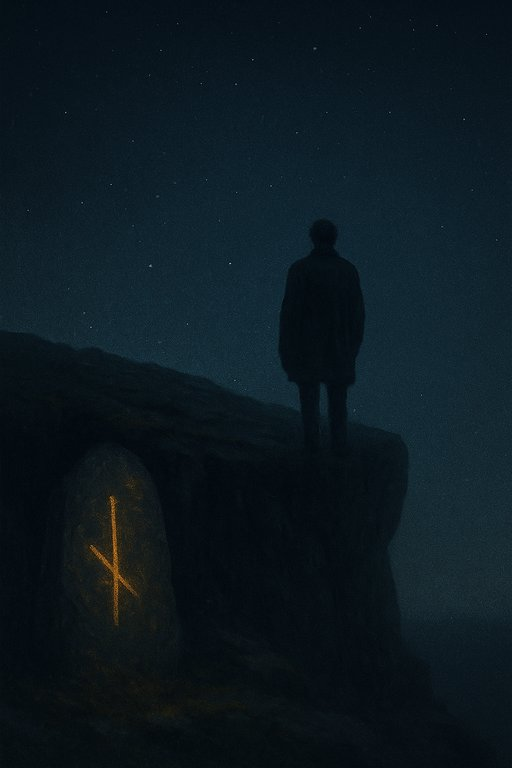

Publicado em 2025-05-28 20:18:27
Escrevi este livro com o coração cheio e os nervos expostos. Não para agradar. Não para entreter. Mas para inquietar. Porque a humanidade que vejo à minha volta não vive — repete.
“Fragmentos do Código dos Mortos†é uma viagem pelos corredores sombrios do nosso ADN cultural. Não falo de genes, mas de heranças invisÃveis — os hábitos, medos, dogmas e crenças que arrastamos como se fossem nossos, quando não passam de ecos dos que nos antecederam.
Chamam-lhe tradição. Eu chamo-lhe execução cega de um código antigo, escrito por mortos e obedecido por vivos.
Somos programados, desde a infância, para sobreviver e não para viver.
Somos ensinados a repetir, não a criar. A obedecer, não a pensar.
Neste livro não ofereço respostas fáceis — lanço perguntas difÃceis. Cada capÃtulo é um fragmento do espelho que evitas. Um espelho que te mostra que, apesar da tecnologia, das redes, da inteligência artificial… continuamos, na essência, homens das cavernas à volta da fogueira, encantados com a sombra das crenças.
Ao longo de nove reflexões, desvendo os pilares dessa programação ancestral:
Este não é um livro para leitores adormecidos.
É um livro para quem já sente um desconforto visceral com o teatro da normalidade.
Para os que pressentem que algo está profundamente errado, mas não conseguem dar-lhe nome.
Aqui, dou-lhe nome. Dou-lhe forma. E, quem sabe, ajudo a acender a faÃsca do inÃcio.
Porque sinto que estamos a atravessar um limiar civilizacional.
A tecnologia avança, mas a alma humana estagna.
Repetimos ideias mortas com entoação de evangelho, veneramos instituições falidas como se fossem sagradas e chamamos “progresso†à reciclagem de velhas mentiras com nomes novos.
“Fragmentos do Código dos Mortos†é o meu grito — sereno, mas firme.
Um convite à desprogramação interior.
À rebeldia lúcida.
À liberdade não herdada, mas conquistada.
Para os que já não se contentam com respostas feitas.
Para os que sentem que há mais vida para viver do que a que nos ensinam.
Para os que ousam pensar diferente, viver diferente e ser diferentes.
Se fores um deles, este livro não é uma leitura. É um espelho. Um ritual. Uma faÃsca.
Não somos o que escolhemos ser. Somos o que nos programaram para não questionar.
Mas isso pode mudar — se tiveres coragem para ler com os olhos abertos e a alma nua.
Que este livro não te embale — que te incomode.
Porque é no desconforto que nasce a consciência.
E é da consciência que nasce a liberdade.
Com inquietude,
Francisco Gonçalves
(Maio de 2025)
🔹 📘 PDF Version
🔹 📗 EPUB Version
🔹 🌠HTML Version